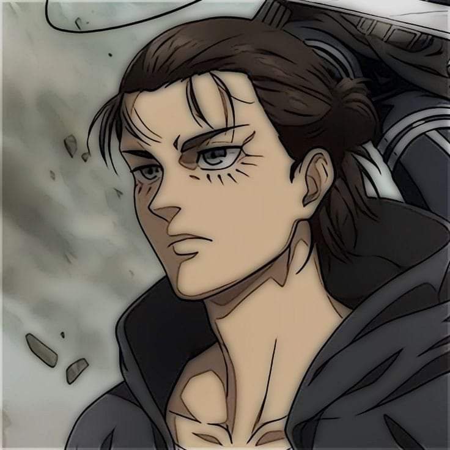

EREN YEAGER
ايرين ييغر هو بطل انمي هجوم العمالقة
ولد ايرين في عام 835 في مقاطعة شيغانشينا في جدار ماريا
في عام 845 هاجم العملاق الضخم هجوما على جدار ماريا و دخل العمالقةالى داخل الاسوار في ذالك اليوم ايرين خسر امه التي التهمهاعملاق
في عام 850 ظهر العملاق الضخم مجددا في جدار روز و حدث مثلما حدث في جدار ماريا وايرين التهم بواسطة احد العمالقة
وبعدها ظهر عملاق يقاتل بقية العمالقة ثم ظهر ايرين من العملاق

بعدما اكتشف ايرين انه تم الغدر به من اقرب الناس اليه واكتشف ان البش البشرية تعيش خارج الاسوار خاب امله
في عام 854قرر ايرين تددمير العالم الخارجي عن طريق دك الارض وهو عبارة عن ملايين العمالقة الضخام
ولكن لتفعيل دك الارض لابد من عملاق مؤسس و عملاق ذو دم ملكي ايرين بعد ملامسته لزيك ييغر فعل دك الارض
وتحدث ايرين الى كافة رعاية يومير
ايرين قتل 1600000000 شخص
مات ايرين في الحرب التي عرفت بحرب الارض و السماء
هذة قصة ايرين ييغر الذي اصبح الشرير في القصة